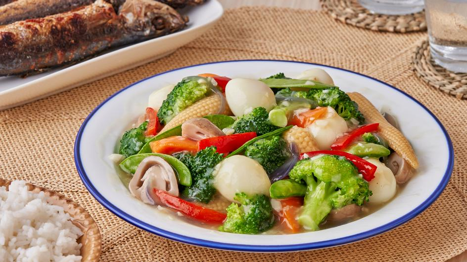

Chop Suey
—Recipe—

Ingredients
- 1 broccoli, cut into florets
- 1 cauliflower, cut into florets
- 1 large carrots sliced thinly
- 2 stalks celery, sliced
- 1 yellow capsicum (bell pepper), sliced
- 2 small chayote, sliced
- 6 pcs dried shiitake mushrooms, rehydrated and sliced
- 300g cup pork belly, diced>
- 1 block tofu, deep fried and sliced
- 6 cloves garlic, minced
- 1 red onion, chopped
- 1 tbsp cornstarch (dissolved in 1/4 cup water)
- 1 cup chicken stock
- 1 tbsp sugar
- fish sauce
- freshly ground black pepper
- oil
Procedure
- Heat up a wok in a very high heat, add oil and sauté garlic and onion.
- Add pork then stir fry for 2 minutes.
- Add broccoli, cauliflower, chayote, celery and shiitake mushroom then continue to stir fry for 2 minutes.
- Add capsicum and carrots then stir fry for 2 minutes.
- Add chicken stock, sugar and dissolved cornstarch, bring to a rapid boil.
- Once it boils fish sauce and freshly ground black pepper.